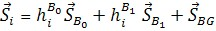
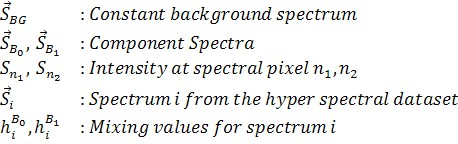
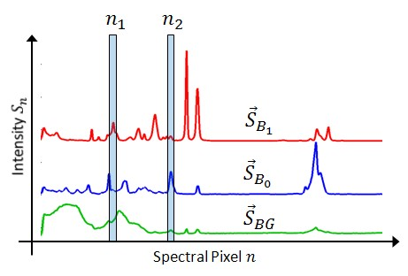
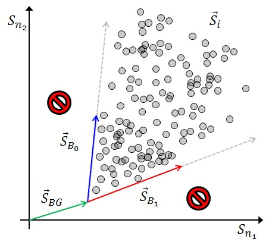
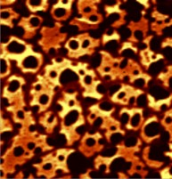
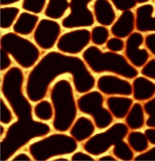
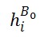
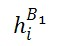

|
光谱叠加（几何视图）
|
许多数学描述通过使用高光谱数据集的几何模型更容易理解。该几何模型适用于遵循叠加原理的数据，特别是包含多种组分混合物的拉曼光谱。
包含两种组分的完整高光谱数据集可以用三个光谱来描述：一个恒定的背景光谱和两个具有相应混合值的成分光谱：


通常，成分光谱会归一化为一（面积归一化）。在这种情况下，混合值恰好是对应成分的信号量。
为了绘制上述高维向量方程，需要进行降维，即投影到二维空间。使用光谱像素n1和n2处的两个强度值作为二维投影平面的坐标：

使用这两个坐标，下图中的每个灰点代表高光谱数据集中的一个光谱：

如果高光谱数据是从图像扫描中提取的，则混合值可以显示为图像：
|
 |
 |
|
 |
 |
备注
局限性
该向量方程 不 适用于具有峰位移的拉曼光谱、PFM曲线或CARS光谱。
恒定背景光谱
只要背景光谱是恒定的，其来源并不重要。恒定背景光谱的示例包括：